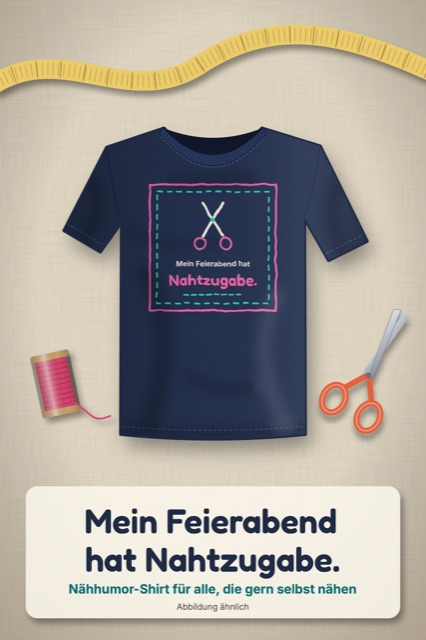
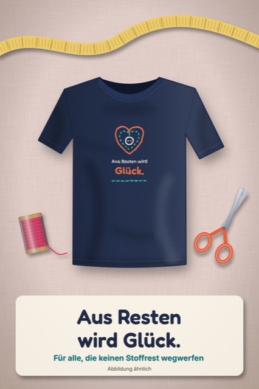
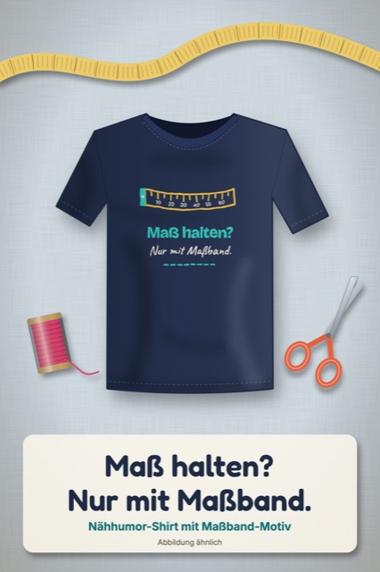
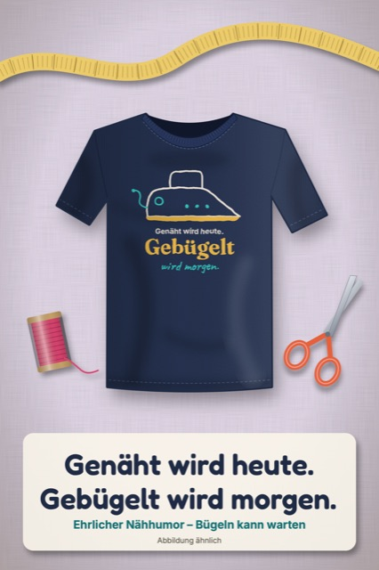

Nähhumor zum Anziehen.
Nadelwitz macht Motive für alle, die gern nähen: Sprüche über Nahtzugaben, verschwundene Scheren und Stoffreste, die zu klein zum Wegwerfen sind. Gedruckt und verschickt werden Shirts, Hoodies, Taschen und Tassen von Spreadshirt.




Abbildungen ähnlich. Bestellung, Druck, Versand und Rechnung laufen über Spreadshirt (sprd.net AG).